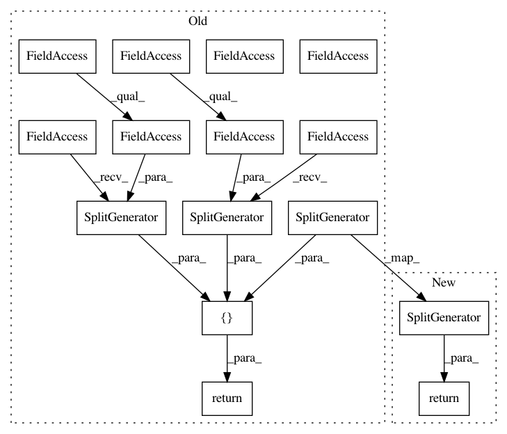

c4b3882498d4c76ce2d824f458f06481a294e78a,tensorflow_datasets/image/duke_ultrasound.py,DukeUltrasound,_split_generators,#DukeUltrasound#Any#,86
Before Change
"invivo": "https://storage.googleapis.com/duke-tfds/ultraduke/mark.csv"
})
return [
tfds.core.SplitGenerator(
name=tfds.Split.TRAIN,
gen_kwargs={
"datapath": dl_paths["data"],
"csvpath": dl_paths["train"]
},
),
tfds.core.SplitGenerator(
name=tfds.Split.VALIDATION,
gen_kwargs={
"datapath": dl_paths["data"],
"csvpath": dl_paths["validation"]
},
),
tfds.core.SplitGenerator(
name=tfds.Split.TEST,
gen_kwargs={
"datapath": dl_paths["data"],
"csvpath": dl_paths["test"]
},
),
tfds.core.SplitGenerator(
name="invivo",
gen_kwargs={
"datapath": dl_paths["data"],
"csvpath": dl_paths["invivo"]
},
)
]
def _generate_examples(self, datapath, csvpath):
reader = csv.DictReader(tf.io.gfile.GFile(csvpath))
for row in reader:
After Change
def _split_generators(self, dl_manager):
dl_paths = dl_manager.download_and_extract({**_DEFAULT_SPLITS, **_DATA_URL})
splits = [
tfds.core.SplitGenerator(
name=name,
num_shards=10,
gen_kwargs={
"datapath": {
"mark_data": dl_paths["mark_data"],
"phantom_data": dl_paths["phantom_data"]
},
"csvpath": dl_paths[name]
}) for name, path in _DEFAULT_SPLITS.items()
]
for name, csv_path in self.custom_csv_splits.items():
splits.append(tfds.core.SplitGenerator(
name=name,
num_shards=10,
gen_kwargs={
"datapath": dl_paths["data"],
"csvpath": csv_path
}))
return splits
def _generate_examples(self, datapath, csvpath):
reader = csv.DictReader(tf.io.gfile.GFile(csvpath))
for row in reader:
In pattern: SUPERPATTERN
Frequency: 3
Non-data size: 15
Instances
Project Name: tensorflow/datasets
Commit Name: c4b3882498d4c76ce2d824f458f06481a294e78a
Time: 2019-09-30
Author: ouwen.huang@duke.edu
File Name: tensorflow_datasets/image/duke_ultrasound.py
Class Name: DukeUltrasound
Method Name: _split_generators
Project Name: tensorflow/datasets
Commit Name: c4b3882498d4c76ce2d824f458f06481a294e78a
Time: 2019-09-30
Author: ouwen.huang@duke.edu
File Name: tensorflow_datasets/image/duke_ultrasound.py
Class Name: DukeUltrasound
Method Name: _split_generators
Project Name: tensorflow/datasets
Commit Name: c79105b01b07fb2299fe6e69730b5ae5f6e1352b
Time: 2020-02-21
Author: no-reply@google.com
File Name: tensorflow_datasets/audio/librispeech.py
Class Name: Librispeech
Method Name: _split_generators
Project Name: tensorflow/datasets
Commit Name: d5e6ca74cb52d87a41e3154d21560f1b21832dbf
Time: 2019-02-20
Author: thedomjack@gmail.com
File Name: tensorflow_datasets/image/colorectal_histology.py
Class Name: ColorectalHistology
Method Name: _split_generators